import librosa
import librosa.display
import matplotlib.pyplot as plt
import numpy as np
import pandas as pd
import os
import seaborn as sns
from sklearn.preprocessing import MultiLabelBinarizer, OneHotEncoder
from spec_generator_sequence import _get_spec, spec_generator
from spec_generator_sequence_multilabel import (spec_generator_multi,
spec_generator_multioutput)
from spec_input_generator import gen, gen_eval
from spectrogram_class import spectrogram
from classic_generator import classic_generatorfrom classic_generator import _instrument_label_generator, get_full_path, classic_train_generator, classic_generatorget_full_path('/train_data/2335.wav', mode='train')'/home/shiya/Documents/music_transcription/notebooks/../data/classic/musicnet/train_data/2335.wav'y, sr = librosa.load('/home/shiya/Documents/music_transcription/notebooks/../data/classic/musicnet/train_data/2335.wav',
sr = 44100)plt.plot(y)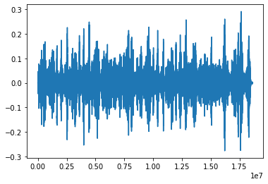
mel_spec = librosa.feature.melspectrogram(y, n_mels = 128, sr = 44100)sns.heatmap(mel_spec)<AxesSubplot:>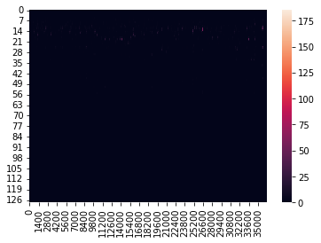
librosa.display.specshow(mel_spec)<matplotlib.collections.QuadMesh at 0x7fa87c058e20>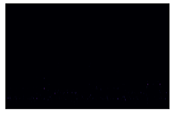
classic_generator_test = classic_generator(batch_size = 1)x_list = [path.rsplit('/', 1)[-1].rsplit('.')[0] for path in classic_generator_test.x]
y_list = [path.rsplit('/', 1)[-1].rsplit('.')[0] for path in classic_generator_test.y]x_list == y_listTrueclassic_generator_test.y[0]'/home/shiya/Documents/music_transcription/notebooks/../data/classic/musicnet/train_labels/1727.csv'classic_generator_test.x[122]'/home/shiya/Documents/music_transcription/notebooks/../data/classic/musicnet/train_data/2366.wav'# classic_train_generator('/home/shiya/Documents/music_transcription/notebooks/../data/classic/musicnet/train_data/2335.wav')test_classic_gen = classic_generator_test.__getitem__(3)test_classic_gen[0][0].shape(128, 200, 1)test_classic_gen[1]['instrument_1'].shape(1, 200, 83)sns.heatmap(np.squeeze(test_classic_gen[0][0], -1))<AxesSubplot:>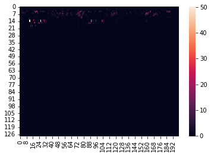
test_classic_gen[0][0].shape(3769, 128, 1)sns.heatmap(test_classic_gen[1]['1'][1])%run classic_generatordef ger_instrument_frame(file, ins, num_freq, num_time):
_df = pd.read_csv(file)
_df = _df[_df['instrument'] == ins]
tmp_arr = np.zeros((num_freq, num_time))
for i in _df.iterrows():
start_time = i['start_time']/bin/bash: /home/shiya/anaconda3/envs/music/lib/libtinfo.so.6: no version information available (required by /bin/bash)
/home/shiya/Documents/music_transcription/notebookscwd = os.getcwd()cwd'/home/shiya/Documents/music_transcription/notebooks'os.path.join(os.getcwd(), '/../data/classic/musicnet/train_labels/1727.csv')'/../data/classic/musicnet/train_labels/1727.csv'librosa.get_duration(filename = '../data/classic/musicnet/train_data/1727.wav')447.0595918367347'../data/classic/musicnet/train_labels/1727.csv'.rsplit('/', maxsplit=1)['../data/classic/musicnet/train_labels', '1727.csv']os.path.join('../data/classic/musicnet/train_labels/',
'../train_data/',
'1727.wav')'../data/classic/musicnet/train_labels/../train_data/1727.wav'test_inst_generator = _instrument_label_generator('../data/classic/musicnet/train_labels/1727.csv', 1, 9000, mode = 'train')sns.heatmap(test_inst_generator)<AxesSubplot:>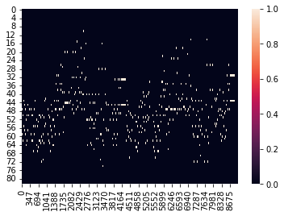
classic_label = pd.read_csv('../data/classic/musicnet/train_labels/1727.csv')
classic_label.head()| start_time | end_time | instrument | note | start_beat | end_beat | note_value | |
|---|---|---|---|---|---|---|---|
| 0 | 9182 | 90078 | 43 | 53 | 4.0 | 1.5 | Dotted Quarter |
| 1 | 9182 | 33758 | 42 | 65 | 4.0 | 0.5 | Eighth |
| 2 | 9182 | 62430 | 1 | 69 | 4.0 | 1.0 | Quarter |
| 3 | 9182 | 202206 | 44 | 41 | 4.0 | 3.5 | Whole |
| 4 | 9182 | 62430 | 1 | 81 | 4.0 | 1.0 | Quarter |
classic_1_inst = classic_label[classic_label['instrument'] == 1]
classic_1_inst.head()| start_time | end_time | instrument | note | start_beat | end_beat | note_value | |
|---|---|---|---|---|---|---|---|
| 2 | 9182 | 62430 | 1 | 69 | 4.0 | 1.0 | Quarter |
| 4 | 9182 | 62430 | 1 | 81 | 4.0 | 1.0 | Quarter |
| 7 | 62430 | 119774 | 1 | 84 | 5.0 | 1.0 | Quarter |
| 8 | 62430 | 119774 | 1 | 72 | 5.0 | 1.0 | Quarter |
| 11 | 119774 | 145886 | 1 | 74 | 6.0 | 0.5 | Eighth |
for i in classic_label.head(2).iterrows():
print(i)
print(type(i[1]))(0, start_time 9182
end_time 90078
instrument 43
note 53
start_beat 4.0
end_beat 1.5
note_value Dotted Quarter
Name: 0, dtype: object)
<class 'pandas.core.series.Series'>
(1, start_time 9182
end_time 33758
instrument 42
note 65
start_beat 4.0
end_beat 0.5
note_value Eighth
Name: 1, dtype: object)
<class 'pandas.core.series.Series'>classic_spec = spectrogram('../data/classic/musicnet/train_data/1727.wav',
trunc_off=True)label_list = os.listdir('../data/classic/musicnet/train_labels/')
label_list[:3]['2422.csv', '2114.csv', '2335.csv']df_list = []
for i in label_list:
df_list.append(pd.read_csv('../data/classic/musicnet/train_labels/' + i))
label_df = pd.concat(df_list)
label_df.head(2)| start_time | end_time | instrument | note | start_beat | end_beat | note_value | |
|---|---|---|---|---|---|---|---|
| 0 | 90078 | 124382 | 1 | 60 | 0.5 | 0.489583 | Quarter |
| 1 | 124382 | 138718 | 1 | 65 | 1.0 | 0.489583 | Quarter |
label_df['instrument'].unique()array([ 1, 43, 41, 61, 71, 72, 74, 69, 42, 44, 7])len(label_df['note'].unique())8319233758/ len(classic_spec.signal) * 96279391.84923862286319421150/ len(classic_spec.signal) * 96279483.352802956157classic_spec.sr44100classic_spec.spec.shape(256, 9627)y = np.array([['a', 'r'], ['b', 'q'], ['c', 'z']])
nb = MultiLabelBinarizer()
nb.fit(y)
nb.transform(np.array([['a', np.nan], ['d']]))array([[1, 0, 0, 0, 0, 0],
[0, 0, 0, 0, 0, 0]])meta_df = pd.read_csv('../data/OrchideaSOL_metadata.csv')multioutput_generator = spec_generator_multioutput(meta_df, 32)multioutput_generator.__getitem__(2)[1][1].shapeKeyError: 1meta_df['Pitch ID (if applicable)'][meta_df['Pitch ID (if applicable)'].isna()]138 NaN
142 NaN
233 NaN
234 NaN
235 NaN
..
13027 NaN
13028 NaN
13029 NaN
13030 NaN
13043 NaN
Name: Pitch ID (if applicable), Length: 103, dtype: float64generator = spec_generator(meta_df, 32)print(generator.indices)[9012 3451 6714 ... 9387 4120 7367]
%run spec_generator_sequence_multilabel.pygenerator<spec_generator_sequence.spec_generator at 0x7f58509d07c0>generate_multi = spec_generator_multi(meta_df, 32)generate_multi.__getitem__(2)[1].shape(32, 107)generate_multi.SyntaxError: invalid syntax (446800042.py, line 1)import random
%%timeit
random_num = random.randint(1, 50)
generator.__getitem__(random_num)[1][1]40.6 ms ± 8.01 ms per loop (mean ± std. dev. of 7 runs, 10 loops each)test = pd.DataFrame({'test':['d', 'z', 'r', 'e', 'y']})test| test | |
|---|---|
| 0 | d |
| 1 | z |
| 2 | r |
| 3 | e |
| 4 | y |
hot = OneHotEncoder(sparse=False)
hot.fit_transform(test)array([[1., 0., 0., 0., 0.],
[0., 0., 0., 0., 1.],
[0., 0., 1., 0., 0.],
[0., 1., 0., 0., 0.],
[0., 0., 0., 1., 0.]])hot.categories_[array(['d', 'e', 'r', 'y', 'z'], dtype=object)](np.random.randint(0, 2, size=10000) == np.random.randint(0, 2, size=10000)).mean()0.4947hop_length = 2048
win_length = 512
n_fft = 1024meta_df['Path'].sample(1).values[0]'Brass/Trumpet_C+sordina_wah/flatterzunge_open/TpC+SW-flatt_open-G#3-mf-N-N.wav'%%timeit
path = meta_df['Path'].sample(1).values[0]
test = _get_spec('Winds/Flute/ordinario/Fl-ord-D6-ff-N-T20d.wav', test_verbose=False)962 µs ± 37.6 µs per loop (mean ± std. dev. of 7 runs, 1,000 loops each)%run spectrogram_class.pyAttributeError: 'spectrogram' object has no attribute 'spec'meta_df.head(2)| Path | Family (abbr.) | Family (in full) | Instrument (abbr.) | Instrument (in full) | Technique (abbr.) | Technique (in full) | Pitch | Pitch ID (if applicable) | Dynamics | Dynamics ID (if applicable) | Instance ID | Mute (abbr.) | Mute (in full) | String ID (if applicable) | Needed digital retuning | Fold | |
|---|---|---|---|---|---|---|---|---|---|---|---|---|---|---|---|---|---|
| 0 | Brass/Bass_Tuba+sordina/ordinario/BTb+S-ord-A#... | Brass | Brass | BTb | Bass Tuba | ord | ordinario | A#0 | 22.0 | f | 3.0 | 0.0 | S | Sordina | NaN | False | 2 |
| 1 | Brass/Bass_Tuba+sordina/ordinario/BTb+S-ord-A#... | Brass | Brass | BTb | Bass Tuba | ord | ordinario | A#0 | 22.0 | p | 1.0 | 0.0 | S | Sordina | NaN | True | 0 |
meta_test = meta_df[['Instrument (in full)']]one_hot = OneHotEncoder(sparse= False)
one_hot.fit_transform(meta_test)array([[0., 0., 1., ..., 0., 0., 0.],
[0., 0., 1., ..., 0., 0., 0.],
[0., 0., 1., ..., 0., 0., 0.],
...,
[0., 1., 0., ..., 0., 0., 0.],
[0., 1., 0., ..., 0., 0., 0.],
[0., 1., 0., ..., 0., 0., 0.]])meta_df['Path'][2:6].valuesarray(['Brass/Bass_Tuba+sordina/ordinario/BTb+S-ord-A#1-f-N-T20u.wav',
'Brass/Bass_Tuba+sordina/ordinario/BTb+S-ord-A#1-p-N-T22u.wav',
'Brass/Bass_Tuba+sordina/ordinario/BTb+S-ord-A#2-f-N-T29u.wav',
'Brass/Bass_Tuba+sordina/ordinario/BTb+S-ord-A#2-p-N-T31u.wav'],
dtype=object)one_hot.categories_[array(['Accordion', 'Alto Saxophone', 'Bass Tuba', 'Bassoon', 'Cello',
'Clarinet in Bb', 'Contrabass', 'Flute', 'French Horn', 'Guitar',
'Harp', 'Oboe', 'Trombone', 'Trumpet in C', 'Viola', 'Violin'],
dtype=object)]meta_freq = 1/meta_df.groupby('Instrument (in full)')['Instrument (in full)'].transform('count')meta_freq0 0.002000
1 0.002000
2 0.002000
3 0.002000
4 0.002000
...
13260 0.002653
13261 0.002653
13262 0.002653
13263 0.002653
13264 0.002653
Name: Instrument (in full), Length: 13265, dtype: float64%%time
meta_df.sample(32, )
# replace = True,
# weights=meta_freq)[['Instrument (in full)']].value_counts(normalize=True)CPU times: user 1.75 ms, sys: 0 ns, total: 1.75 ms
Wall time: 1.54 ms| Path | Family (abbr.) | Family (in full) | Instrument (abbr.) | Instrument (in full) | Technique (abbr.) | Technique (in full) | Pitch | Pitch ID (if applicable) | Dynamics | Dynamics ID (if applicable) | Instance ID | Mute (abbr.) | Mute (in full) | String ID (if applicable) | Needed digital retuning | Fold | |
|---|---|---|---|---|---|---|---|---|---|---|---|---|---|---|---|---|---|
| 978 | Brass/Horn/sforzato/Hn-sfz-F#2-f-N-N.wav | Brass | Brass | Hn | French Horn | sfz | sforzato | F#2 | 42.0 | f | 3.0 | 0.0 | N | None | NaN | False | 0 |
| 748 | Brass/Horn/flatterzunge_stopped/Hn-flatt_stopp... | Brass | Brass | Hn | French Horn | flatt_stopped | flatterzunge_stopped | B3 | 59.0 | mf | 2.0 | 0.0 | N | None | NaN | False | 4 |
| 7327 | Strings/Viola/sul_tasto_tremolo/Va-tasto_trem-... | Strings | Violin Family | Va | Viola | tasto_trem | sul_tasto_tremolo | E5 | 76.0 | mf | 2.0 | 0.0 | N | None | 1.0 | True | 0 |
| 2757 | Keyboards/Accordion/ordinario/Acc-ord-D#4-mf-a... | Keyboards | Keyboards | Acc | Accordion | ord | ordinario | D#4 | 63.0 | mf | 2.0 | 4.0 | N | None | NaN | False | 4 |
| 3972 | PluckedStrings/Harp/ordinario/Hp-ord-G#4-mf-N-... | PluckedStrings | Plucked Strings | Hp | Harp | ord | ordinario | G#4 | 68.0 | mf | 2.0 | 0.0 | N | None | NaN | False | 4 |
| 7147 | Strings/Viola/sul_ponticello/Va-pont-F#5-mf-3c... | Strings | Violin Family | Va | Viola | pont | sul_ponticello | F#5 | 78.0 | mf | 2.0 | 2.0 | N | None | 3.0 | False | 0 |
| 10638 | Strings/Violoncello/pizzicato_secco/Vc-pizz_se... | Strings | Violin Family | Vc | Cello | pizz_sec | pizzicato_secco | A3 | 57.0 | ff | 4.0 | 0.0 | N | None | 1.0 | False | 0 |
| 7542 | Strings/Viola/tremolo/Va-trem-D6-mf-1c-T12u.wav | Strings | Violin Family | Va | Viola | trem | tremolo | D6 | 86.0 | mf | 2.0 | 0.0 | N | None | 1.0 | True | 3 |
| 7457 | Strings/Viola/tremolo/Va-trem-C#5-pp-2c-N.wav | Strings | Violin Family | Va | Viola | trem | tremolo | C#5 | 73.0 | pp | 0.0 | 1.0 | N | None | 2.0 | False | 3 |
| 8171 | Strings/Violin/artificial_harmonic/Vn-art_harm... | Strings | Violin Family | Vn | Violin | art_harm | artificial_harmonic | B7 | 107.0 | mf | 2.0 | 0.0 | N | None | 1.0 | False | 3 |
| 12890 | Winds/Sax_Alto/aeolian/ASax-aeol-A3-p-N-R100u.wav | Winds | Woodwinds | ASax | Alto Saxophone | aeol | aeolian | A3 | 57.0 | p | 1.0 | 0.0 | N | None | NaN | True | 2 |
| 482 | Brass/Bass_Tuba/slap_pitched/BTb-slap-F#1-f-N-... | Brass | Brass | BTb | Bass Tuba | slap | slap_pitched | F#1 | 30.0 | f | 3.0 | 0.0 | N | None | NaN | False | 0 |
| 9260 | Strings/Violin/sul_ponticello/Vn-pont-A3-mf-4c... | Strings | Violin Family | Vn | Violin | pont | sul_ponticello | A3 | 57.0 | mf | 2.0 | 3.0 | N | None | 4.0 | False | 0 |
| 2346 | Brass/Trumpet_C/slap_pitched/TpC-slap-G#4-p-N-... | Brass | Brass | TpC | Trumpet in C | slap | slap_pitched | G#4 | 68.0 | p | 1.0 | 0.0 | N | None | NaN | False | 1 |
| 3475 | PluckedStrings/Guitar/ordinario_high_register/... | PluckedStrings | Plucked Strings | Gtr | Guitar | ord_hi_reg | ordinario_high_register | D6 | 86.0 | mf | 2.0 | 1.0 | N | None | 2.0 | False | 2 |
| 3089 | Keyboards/Accordion/ordinario/Acc-ord-G1-pp-N-... | Keyboards | Keyboards | Acc | Accordion | ord | ordinario | G1 | 31.0 | pp | 0.0 | 0.0 | N | None | NaN | False | 0 |
| 8444 | Strings/Violin/ordinario/Vn-ord-B4-mf-4c-N.wav | Strings | Violin Family | Vn | Violin | ord | ordinario | B4 | 71.0 | mf | 2.0 | 3.0 | N | None | 4.0 | False | 1 |
| 5873 | Strings/Viola+sordina/ordinario/Va+S-ord-G3-mf... | Strings | Violin Family | Va | Viola | ord | ordinario | G3 | 55.0 | mf | 2.0 | 3.0 | S | Sordina | 4.0 | True | 1 |
| 6683 | Strings/Viola/pizzicato_l_vib/Va-pizz_lv-C#4-m... | Strings | Violin Family | Va | Viola | pizz_lv | pizzicato_l_vib | C#4 | 61.0 | mf | 2.0 | 2.0 | N | None | 3.0 | False | 2 |
| 9961 | Strings/Violoncello+sordina_piombo/tremolo/Vc+... | Strings | Violin Family | Vc | Cello | trem | tremolo | G#4 | 68.0 | mf | 2.0 | 0.0 | SP | Piombo | 1.0 | False | 0 |
| 1317 | Brass/Trombone+sordina_wah/flatterzunge_open/T... | Brass | Brass | Tbn | Trombone | flatt_open | flatterzunge_open | B3 | 59.0 | mf | 2.0 | 0.0 | SW | Wah | NaN | False | 1 |
| 10597 | Strings/Violoncello/pizzicato_l_vib/Vc-pizz_lv... | Strings | Violin Family | Vc | Cello | pizz_lv | pizzicato_l_vib | F2 | 41.0 | mf | 2.0 | 3.0 | N | None | 4.0 | False | 3 |
| 715 | Brass/Horn/flatterzunge/Hn-flatt-F3-mf-N-N.wav | Brass | Brass | Hn | French Horn | flatt | flatterzunge | F3 | 53.0 | mf | 2.0 | 0.0 | N | None | NaN | False | 2 |
| 6528 | Strings/Viola/ordinario/Va-ord-G#3-pp-4c-T18u.wav | Strings | Violin Family | Va | Viola | ord | ordinario | G#3 | 56.0 | pp | 0.0 | 3.0 | N | None | 4.0 | True | 2 |
| 5542 | Strings/Contrabass/tremolo/Cb-trem-B3-pp-1c-T1... | Strings | Violin Family | Cb | Contrabass | trem | tremolo | B3 | 59.0 | pp | 0.0 | 0.0 | N | None | 1.0 | True | 1 |
| 11158 | Strings/Violoncello/tremolo/Vc-trem-D4-pp-2c-N... | Strings | Violin Family | Vc | Cello | trem | tremolo | D4 | 62.0 | pp | 0.0 | 1.0 | N | None | 2.0 | False | 4 |
| 4033 | PluckedStrings/Harp/pizzicato_bartok/Hp-pizz_b... | PluckedStrings | Plucked Strings | Hp | Harp | pizz_bartok | pizzicato_bartok | D#2 | 39.0 | ff | 4.0 | 0.0 | N | None | NaN | True | 0 |
| 10073 | Strings/Violoncello/col_legno_battuto/Vc-legno... | Strings | Violin Family | Vc | Cello | legno_batt | col_legno_battuto | C#2 | 37.0 | mf | 2.0 | 3.0 | N | None | 4.0 | False | 2 |
| 12233 | Winds/Flute/flatterzunge/Fl-flatt-D#6-ff-N-N.wav | Winds | Woodwinds | Fl | Flute | flatt | flatterzunge | D#6 | 87.0 | ff | 4.0 | 0.0 | N | None | NaN | False | 1 |
| 11602 | Winds/Bassoon/vibrato/Bn-vib-G#3-mf-N-N.wav | Winds | Woodwinds | Bn | Bassoon | vib | vibrato | G#3 | 56.0 | mf | 2.0 | 0.0 | N | None | NaN | False | 2 |
| 10654 | Strings/Violoncello/pizzicato_secco/Vc-pizz_se... | Strings | Violin Family | Vc | Cello | pizz_sec | pizzicato_secco | B4 | 71.0 | mf | 2.0 | 0.0 | N | None | 1.0 | False | 0 |
| 3546 | PluckedStrings/Guitar/sul_ponticello/Gtr-pont-... | PluckedStrings | Plucked Strings | Gtr | Guitar | pont | sul_ponticello | C4 | 60.0 | mf | 2.0 | 1.0 | N | None | 2.0 | False | 3 |
meta_df.sample(1)['Path'].values[0]'Strings/Viola/ordinario/Va-ord-A4-ff-3c-R100d.wav'test_spec = spectrogram(meta_df.sample(1)['Path'].values[0])test_spec.plot_spec()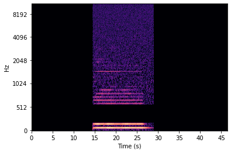
test, _ = librosa.load('../data/_OrchideaSOL2020_release/OrchideaSOL2020/PluckedStrings/Harp/pizzicato_bartok/Hp-pizz_bartok-G3-ff-N-N.wav',
sr = None)test.shape(826215,)def mask_spec(arr, inplace = False):
loop = random.randint(1, 2)
tmp = arr.copy()
for i in range(loop):
start = random.randint(0, arr.shape[1])
duration = random.randint(25, 60)
if inplace == True:
arr[:, start:start + duration] = 0
else:
tmp[:, start:start+duration] = 0
freq_loop = random.randint(1, 3)
for freq in range(freq_loop):
start = random.randint(0, arr.shape[0])
duration = random.randint(25, 60)
if inplace == True:
arr[start:start + duration, :] = 0
else:
tmp[start:start + duration, :] = 0
return None if inplace == True else tmp# librosa.display.specshow(librosa.amplitude_to_db(mask_spec(spec_sample)), y_axis='log', x_axis = 's')import random
print(random.randint(0, 9))9meta_df['_ins'] = meta_df['Instrument (in full)']print(random.randint.__doc__)Return random integer in range [a, b], including both end points.
test, _ = next(gen(meta_df, test_verbose = True))HIT
SUCCESSprint(test)[[[0.]
[0.]
[0.]
...
[0.]
[0.]
[0.]]
[[0.]
[0.]
[0.]
...
[0.]
[0.]
[0.]]
[[0.]
[0.]
[0.]
...
[0.]
[0.]
[0.]]
...
[[0.]
[0.]
[0.]
...
[0.]
[0.]
[0.]]
[[0.]
[0.]
[0.]
...
[0.]
[0.]
[0.]]
[[0.]
[0.]
[0.]
...
[0.]
[0.]
[0.]]]np.load('/home/shiya/Documents/Music_transcription_fastai/data/_OrchideaSOL2020_release/OrchideaSOL2020/Strings/Violin/ordinario/Vn-ord-A3-ff-4c-N.npy',
allow_pickle=True)FileNotFoundError: [Errno 2] No such file or directory: '/home/shiya/Documents/Music_transcription_fastai/data/_OrchideaSOL2020_release/OrchideaSOL2020/Strings/Violin/ordinario/Vn-ord-A3-ff-4c-N.npy'0 in testTrueprint(test.shape)(256, 500, 1)librosa.display.specshow(librosa.amplitude_to_db(np.reshape(test, newshape = test.shape[:2])), x_axis = 's',
y_axis = 'mel', sr=44100, hop_length=2048,
n_fft=2048)<matplotlib.collections.QuadMesh at 0x7f7700c99760>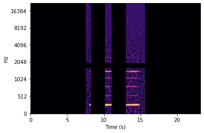
sample = meta_df.sample(1)sample['Path'].valuesarray(['Strings/Violoncello+sordina_piombo/ordinario/Vc+SP-ord-D3-mf-2c-N.wav'],
dtype=object)spec = spectrogram(sample['Path'].values[0])AttributeError: 'spectrogram' object has no attribute 'spec'sample['Path']8462 Strings/Violin/ordinario/Vn-ord-C#4-pp-4c-N.wav
Name: Path, dtype: objectnp.save('testnig.npy', spec.spec)!ls/bin/bash: /home/shiya/anaconda3/envs/music/lib/libtinfo.so.6: no version information available (required by /bin/bash)
__init__.py spectrogram_class.py
model.png spectrogram.py
music_transcription_2conv.ipynb test.ipynb
music_transcription_class.ipynb testnig.npy
music_transcription.ipynb wav_converter_class.py
__pycache__ wav_converter.py
spec_input_generator.pyload_test = np.load('testnig.npy', allow_pickle = True)load_testarray([[0., 0., 0., ..., 0., 0., 0.],
[0., 0., 0., ..., 0., 0., 0.],
[0., 0., 0., ..., 0., 0., 0.],
...,
[0., 0., 0., ..., 0., 0., 0.],
[0., 0., 0., ..., 0., 0., 0.],
[0., 0., 0., ..., 0., 0., 0.]])load_test.shape()sample_path = meta_df.sample(1)['Path'].values[0]
sample_path'Strings/Violin/ordinario/Vn-ord-A4-ff-2c-N.wav'test_sample = spectrogram(sample_path,
preprocess = False, trunc_off = True)test_sample.plot_spec()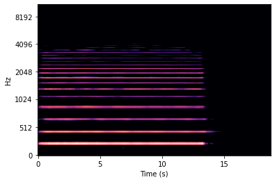
test_sample.add_noise()test_sample.generate_spec()test_sample.plot_spec()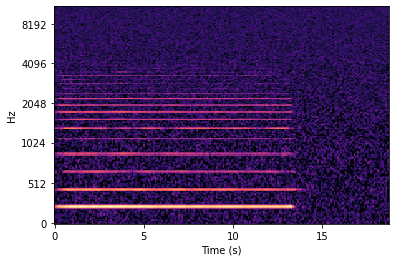
test_sample.mask_spec()test_sample.plot_spec()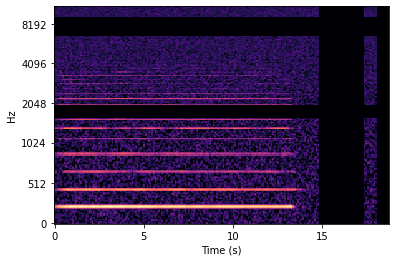
test_sample.shift_spec()test_sample.plot_spec()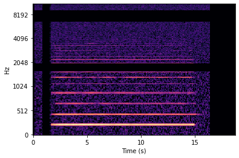
testtest.plot_spec()NameError: name 'testtest' is not defined